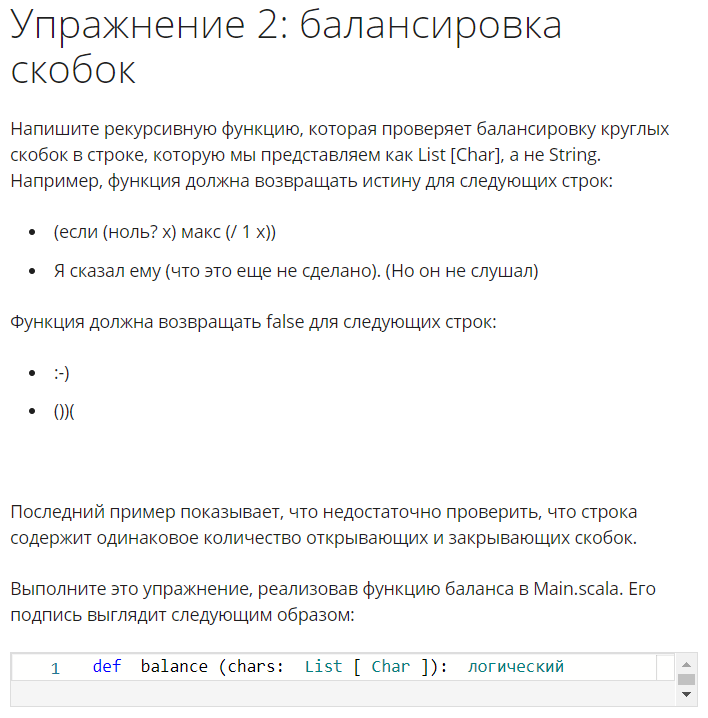
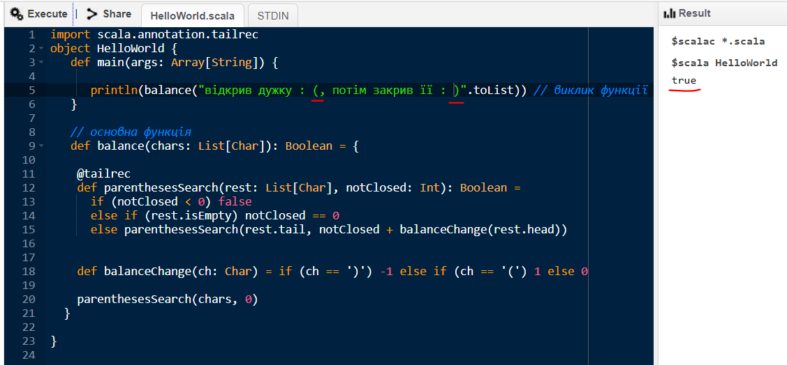
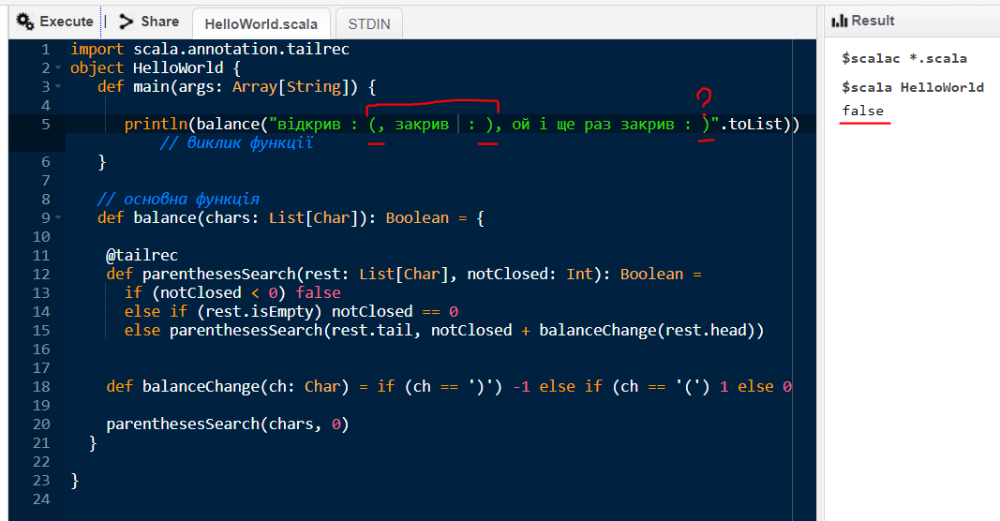
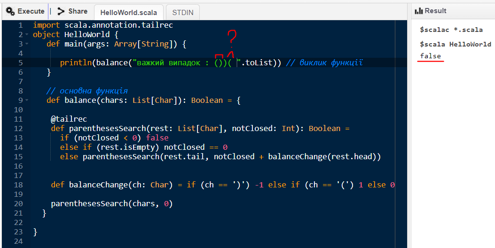

|
МІНІСТЕРСТВО ОСВІТИ І НАУКИ УКРАЇНИ
КИЇВСЬКИЙ НАЦІОНАЛЬНИЙ УНІВЕРСИТЕТ ІМЕНІ ТАРАСА ШЕВЧЕНКА ФАКУЛЬТЕТ ІНФОРМАЦІЙНИХ ТЕХНОЛОГІЙ Кафедра програмних систем і технологій
Functional Programming Principles in Scala
Завдання №2
|
|||
|
Виконав: |
Шуст Денис Олександрович |
Оцінка |
|
|
Група |
ІПЗ-43 |
в балах |
за національною шкалою |
|
Форма навчання |
денна |
|
|
|
Спеціальність |
121 |
||
|
Перевірила: |
Ковалюк Т.В. |
||
|
Дата перевірки |
|
||
|
2020 |
|||
Завдання

Код
def balance(chars: List[Char]): Boolean = {
@tailrec
def parenthesesSearch(rest: List[Char], notClosed: Int): Boolean =
if (notClosed < 0) false
else if (rest.isEmpty) notClosed == 0
else parenthesesSearch(rest.tail, notClosed + balanceChange(rest.head))
def balanceChange(ch: Char) = if (ch == ')') -1 else if (ch == '(') 1 else 0
parenthesesSearch(chars, 0)
}
Результати



Отже, в ході виконання лабораторної роботі було отримано навички роботи з мовою Scala в парадигмі функціонального програмування, а саме використання хвостових рекурсій задля вирішення завдання балансування дужок. Програма працює коректно, та цілком правильно визначає, чи стоять дужки в правильному порядку.